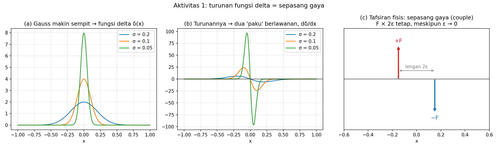
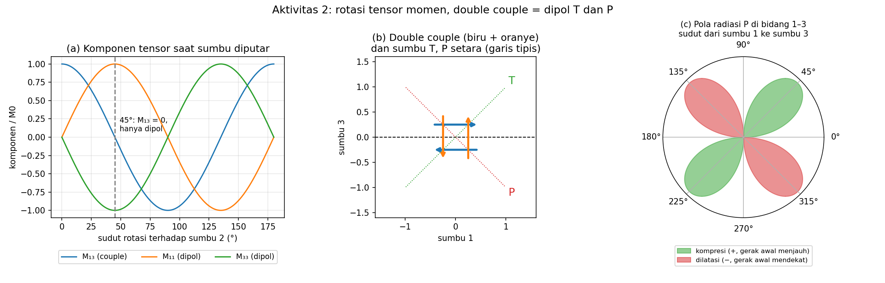

Beranda / Teaching / Seismologi Kuantitatif / Bab 3
Seismologi Kuantitatif · Program Magister
Bab 3 — Representasi Sumber Seismik
Gempa bumi dapat dimodelkan sebagai sistem gaya ekuivalen di dalam medium elastik, dan seluruh sistem gaya itu dirangkum oleh sembilan angka: tensor momen M. Bahan ini mengikuti Aki & Richards, Quantitative Seismology, Bab 3.
Presentasi
28 slide untuk empat pertemuan. Klik atau gunakan panah untuk berpindah slide, atau buka layar penuh.
Di dalam presentasi: ←/→ atau klik untuk navigasi, F layar penuh, N catatan pengajar, P cetak PDF.
1. Pengantar
Masalahnya. Persamaan gerak elastik mengandaikan perpindahan yang kontinu. Saat sesar bergeser, perpindahan di kedua sisi bidang sesar melompat, sehingga persamaan itu tidak berlaku tepat di bidang sesar. Solusinya: ganti pergeseran sesar dengan gaya-gaya yang menghasilkan gelombang yang persis sama, lalu pakai persamaan gelombang biasa.
Peta besar. Sesar bergeser → setara dengan sistem gaya → dirangkum oleh tensor momen M → M dikonvolusi dengan turunan fungsi Green = seismogram.
Sumber dan perambatan. Model sumber menjawab apa yang terjadi di tempat gempa; model perambatan menjawab bagaimana sinyal sampai ke alat. Satu seismogram memuat keduanya.
Tujuan belajar
- Menjelaskan mengapa pergeseran sesar setara dengan double couple, bukan single couple.
- Menghitung momen seismik M0 dan magnitudo momen Mw dari parameter sesar.
- Menuliskan tensor momen untuk sesar geser, rekah tarik, dan ledakan.
- Menjelaskan arti fisis setiap komponen tensor momen.
- Menjelaskan mengapa bidang sesar dan bidang bantu tidak dapat dibedakan dari sumber titik.
Jadwal
| Pertemuan | Fokus | Bagian | Produk belajar |
|---|---|---|---|
| 1 | Dari gempa nyata ke model sesar | 1–5 | Sketsa bidang, normal n, dan slip s |
| 2 | Mengukur ukuran sumber | 6 | Perhitungan M0 dan Mw |
| 3 | Dari satu angka ke sembilan komponen | 7 | Tensor momen sesar geser |
| 4 | Sumber lain dan batas interpretasi | 8–12 | Klasifikasi model sumber dan soal akhir |
Prasyarat minimum hanya perkalian, luas, satuan, dan vektor. Turunan, integral, tensor, dan fungsi Green diperkenalkan ketika diperlukan.
2. Sejarah: H. F. Reid dan teori elastic rebound
Teori elastic rebound lahir dari data geodesi gempa San Francisco 18 April 1906. Harry Fielding Reid menuliskannya dalam laporan Komisi Gempa California (Reid, 1910, Vol. II, hlm. 16–32) dan merangkumnya setahun kemudian (Reid, 1911).
| Survei | Tahun | Yang terlihat |
|---|---|---|
| I | 1851–1865 | Keadaan awal jaringan titik triangulasi |
| II | 1874–1892 | Kepulauan Farallon, jauh dari sesar, bergeser 1,4 m ke utara relatif terhadap sisi timur |
| III | 1906–1907 | Bergeser lagi 1,8 m; garis yang semula lurus kini melengkung, paling tajam di dekat sesar |
1. Sebelum regangan
garis survei lurus melintang sesar
2. Regangan terkumpul
gerak lempeng (panah) melengkungkan garis
3. Sesar pecah, 1906
tiap sisi lurus lagi; slip ≈ 6 m
Penalaran Reid, langkah demi langkah
- Geser, bukan lentur. Wilayah terdeformasi panjangnya 435 km, jauh lebih besar dari lebarnya.
- Gaya elastik, bukan gravitasi. Gerak saat gempa horizontal; hanya gaya elastik tersimpan yang bisa bekerja tiba-tiba.
- Regangan geser = sudut distorsi. Sekitar 1/1.700 di permukaan dan 1/1.500 di kedalaman sesaat sebelum pecah; di terowongan Wright s ≈ 2,5/5.150 ≈ 1/2.000.
- Tegangan: τ = μs. Dengan μ granit 2 × 1010 Pa diperoleh τ ≈ 13 MPa, sedikit di bawah kuat geser granit: bidang sesar lebih lemah dari batuan utuh.
- Energi: W = τ A (ū/2) ≈ 1,75 × 1017 J untuk sesar 435 km × 20 km dengan slip rata-rata 4 m.
- Waktu akumulasi. Sekitar 3,2 m dalam ±50 tahun, separuh slip 1906 — regangan terkumpul kira-kira 100 tahun. Cikal bakal konsep siklus gempa.
- Letak gaya penggerak. f ∝ −dτ/dx = −μ d²u/dx²: gaya berupa seretan di dasar kerak.
- Prediksi. Deretan pilar berjarak ±1 km melintang sesar; regangan ±1/2.000 menandakan gempa kuat — pendahulu GPS dan InSAR.
Eksperimen jeli. Lembaran jeli kaku di antara dua papan digores garis lurus, dipotong sepanjang “sesar”, lalu satu papan digeser sambil ditahan. Saat dilepas, kedua sisi tergelincir dan besar slip sama dengan total pergeseran papan. Bisa diulang dengan agar-agar.
| Gagasan Reid (1910) | Bentuk modern di Aki & Richards |
|---|---|
| Slip melepas regangan elastik | Diskontinuitas [u] pada Σ (§3.1) |
| Energi W = ½ τ ū A | Box 3.4: ΔE = −½∫[u](σ0 + σ1)ν dΣ, dengan σ1 ≈ 0 |
| Gaya f ∝ −μ d²u/dx² | Gaya-benda ekuivalen (pers. 3.5), 50 tahun sebelum Burridge & Knopoff (1964) |
| μ, slip, dan luas sesar | Momen seismik M0 = μūA (pers. 3.16) |
Coba hitung. M0 = (2 × 1010 Pa)(4 m)(435 km × 20 km) ≈ 7 × 1020 N·m, sehingga Mw ≈ 7,8 — dekat estimasi modern gempa 1906.
3. Bahasa dasar: bidang, normal, slip, dan satuan
Yang menentukan gempa bukan gerak absolut tiap sisi sesar, melainkan selisih perpindahan antara kedua sisinya:
- n (di buku: ν) adalah vektor satuan tegak lurus bidang, dari sisi − ke sisi +.
- s · n = 0: slip sejajar bidang, geser murni. s · n ≠ 0: bidang juga membuka atau menutup.
- Membalik definisi plus-minus membalik tanda s dan n bersamaan; sumber fisiknya tetap sama.
| Simbol | Arti | Satuan SI |
|---|---|---|
| A | Luas bidang yang bergeser | m² |
| D (atau ū) | Slip rata-rata | m |
| μ | Modulus geser: kekakuan batuan terhadap geser | Pa = N/m² |
Cek satuan. 10 km² = 10 × (103 m)² = 107 m², bukan 10 m².
4. Bekal awal: fungsi Green dan fungsi delta
| Konsep seismologi | Padanan di listrik-magnet | Arti fisis |
|---|---|---|
| Fungsi Green Gnp(x, t; ξ, τ) | Potensial dari muatan titik | Perpindahan komponen n di x akibat gaya impuls satuan arah p di ξ |
| Superposisi ∫ fp Gnp dV | φ = ∫ ρ G dV | Medan total = jumlah respons semua sumber titik |
| δ(η − ξ) | Muatan titik | Gaya terpusat di satu titik |
| ∂δ/∂ηq | Dipol listrik | Dua gaya berlawanan yang sangat berdekatan |
Kunci seluruh bab: turunan fungsi Green terhadap posisi sumber sama dengan respons terhadap sebuah couple.
Pendalaman. Untuk sesar berluas dan sumber yang berlangsung lama, kontribusi tiap unsur luas dan tiap saat dijumlahkan:
Sumber berada dalam mpq; perambatan berada dalam G. Coba sendiri di Aktivitas 1.
5. Sesar sederhana dan double couple
Pergeseran pada sesar setara dengan dua pasang gaya yang torsinya saling meniadakan (§3.2). Ambil bidang sesar Σ di ξ3 = 0 dengan slip [u1] ke arah ξ1. Dari 27 suku rumus gaya-benda ekuivalen, pada medium isotropik hanya c1313 = c1331 = μ yang tersisa:
f1 adalah couple horizontal (gaya ke +η1 di atas sesar, ke −η1 di bawahnya). f3 adalah gaya vertikal yang berbalik arah sepanjang sesar; totalnya memberi torsi −μūA yang melawan torsi +μūA dari f1.
Single couple
torsi neto ≠ 0: medium berputar — mustahil
Double couple
gaya neto = 0 dan torsi neto = 0 — setara dengan slip
Mengapa harus dua pasang? Gempa adalah proses internal: total gaya = 0 dan total torsi = 0 (pers. 3.6–3.7). Satu couple memutar medium; couple kedua menetralkannya.
Gaya ekuivalen adalah alat matematis, bukan gaya fisik di tiap titik sesar, dan bentuk permukaannya tidak unik (Gambar 3.5 vs 3.6); yang unik hanyalah gaya-benda per satuan volume (Box 3.3).
6. Momen seismik dan magnitudo momen
Buku memakai dyn·cm: log M0 = 1,5 Mw + 16,1. Jangan mencampur konstanta 9,1 dan 16,1. Rentang M0: dari ±105 dyn·cm (retakan laboratorium) sampai ±1030 dyn·cm (Chile 1960).
| Contoh | Parameter | M0 | Mw |
|---|---|---|---|
| Gempa sedang | 10 km × 5 km, D = 0,20 m, μ = 30 GPa | 3 × 1017 N·m | ≈ 5,6 |
| Gempa besar | 20 km × 10 km, D = 1 m, μ = 30 GPa | 6 × 1018 N·m | ≈ 6,5 |
Momen bukan energi. Dimensinya sama (N·m), maknanya berbeda. Untuk slip tak seragam, M0 = ∫∫ μ(ξ) D(ξ) dΣ. Brune (1968): jumlah momen gempa pada satu sesar seluas S memberi slip total ΔU = ΣM0i/(μS).
7. Tensor momen
Setiap komponen Mpq adalah satu pasang gaya dengan gaya ke arah p dan lengan ke arah q (Gambar 3.7). Komponen diagonal adalah dipol vektor tanpa torsi; komponen luar diagonal adalah couple. Karena total torsi nol, M simetris dan hanya enam komponen yang bebas.
Persamaan terpenting bab ini (pers. 3.23): seismogram = sumber dikonvolusi jalur.
Untuk sesar di Bagian 5, hanya M13 = M31 = M0. Diputar 45° terhadap sumbu 2 (Soal 3.4), tensor itu menjadi diagonal:
Bidang sesar vs bidang bantu. Menukar peran normal dan slip menghasilkan M yang sama persis, sehingga dari sumber titik kedua bidang tidak dapat dibedakan. Diperlukan informasi lain: gempa susulan, jejak permukaan, geodesi, atau model sesar berukuran.
Cek jejak. M11 + M22 + M33 = 0 untuk geser murni (tanpa perubahan volume). Model titik berlaku jika panjang gelombang jauh lebih besar dari ukuran sumber. Coba sendiri di Aktivitas 2.
8. Rekah tarik dan sumber volume
| Sumber | Tensor momen M | Perubahan volume | Contoh |
|---|---|---|---|
| Sesar geser | M13 = M31 = M0, lainnya 0 | Tidak ada | Gempa tektonik |
| Rekah tarik | diag(λ, λ, λ + 2μ)·[u3]A | Ada | Intrusi dike, rekahan hidrolik |
| Ledakan / pemuaian | (λ + ⅔μ)ΔV · I | Ada | Ledakan bawah tanah, perubahan fase |
Pada benda Poisson (λ = μ), rekah tarik memberi tiga dipol dengan rasio 1 : 1 : 3. Jika retakan menutup, tanda seluruh tensor berbalik.
Eksperimen pikiran Eshelby. Bayangkan bola logam yang dipanaskan sehingga ingin memuai, padahal terkurung pas di dalam lubang. Regangan yang “ingin” terjadi adalah regangan transformasi Δers. Potong, regangkan, beri gaya agar kembali, las, lalu lepaskan gaya:
cpqrsΔers disebut stress glut, bukan stress drop. Tensor isotropik hanya model sederhana; tidak setiap peristiwa vulkanik pasti isotropik.
9. Panduan kerja: dari deskripsi ke model sumber
- Gambar geometri. Pilih sumbu x1, x2, x3; gambar bidang atau volume sumber.
- Tulis n dan s beserta satuannya.
- Klasifikasikan. s · n = 0 berarti geser murni; ≠ 0 berarti membuka atau menutup.
- Hitung skala. M0 = μAD, semua dalam SI.
- Tulis tensor. Periksa simetri, jejak, dan satuan.
- Nyatakan batas model. Tensor titik cukup untuk gelombang panjang; sumber besar memerlukan slip sebagai fungsi posisi dan waktu.
Contoh. Sesar vertikal, n = (1, 0, 0), slip vertikal ŝ = (0, 0, 1), M0 = 3 × 1017 N·m: hanya komponen (1,3) dan (3,1) yang tidak nol — sama dengan sesar mendatar ber-slip mendatar. Keduanya pasangan bidang sesar dan bidang bantu.
10. Rangkuman persamaan kunci
| No. | Persamaan | Cara membacanya |
|---|---|---|
| 3.2 | un = ∫dτ ∫∫Σ [ui] cijpq νj ∂Gnp/∂ξq dΣ | Slip di sesar cukup untuk menentukan perpindahan di mana pun |
| 3.5 | fp = −∫∫Σ [ui] cijpq νj ∂δ(η−ξ)/∂ηq dΣ | Gaya-benda ekuivalen dari diskontinuitas perpindahan |
| 3.16 | M0 = μūA | Momen seismik = kekakuan × slip rata-rata × luas |
| 3.17 | log M0 = 1,5 Mw + 16,1 (dyn·cm) | Magnitudo momen dari M0 |
| 3.19 | mpq = [ui] νj cijpq | Densitas momen = slip × normal × kekakuan |
| 3.23 | un = Mpq ∗ Gnp,q | Seismogram = sumber ∗ jalur |
| 3.32 | Mpq = ∫∫∫V cpqrs Δers dV | Tensor momen sumber volume |
11. Miskonsepsi umum
| Miskonsepsi | Yang benar |
|---|---|
| Gempa setara dengan satu pasang gaya | Satu couple melanggar kekekalan momentum sudut; yang benar double couple (§3.2) |
| Gaya ekuivalen adalah gaya fisik di tiap titik sesar | Alat matematis; gaya ekuivalen permukaan tidak unik (Box 3.3) |
| Seismogram adalah peta slip | Rekaman menggabungkan sumber, jalur, dan instrumen |
| Momen seismik sama dengan energi | Dimensi sama (N·m), makna berbeda (Box 3.4) |
| Tensor momen sama dengan tegangan di sumber | cΔe adalah stress glut, bukan stress drop (hlm. 57) |
| Mw hanyalah skala magnitudo lain | Diturunkan dari besaran fisis M0, bukan amplitudo empiris |
| Seismogram langsung memberi bidang sesar | Bidang sesar dan bidang bantu memberi M yang sama (hlm. 49) |
| Sesar adalah bidang tipis sempurna | Zona sesar bisa ±200 m, tetapi tetap jauh lebih kecil dari panjang gelombang (Box 3.1) |
12. Latihan
A. Konsep (diskusi berpasangan)
- Mengapa satu seismogram tidak langsung sama dengan peta slip pada sesar?
- Apa arti [u]? Apakah batuan harus benar-benar terbelah di sepanjang seluruh bidang matematis?
- Apa beda momen seismik dan energi seismik?
B. Hitung mandiri
- Sesar 8 km × 4 km, D = 0,5 m, μ = 25 GPa. Hitung M0.
- Untuk n = (0, 1, 0) dan ŝ = (1, 0, 0), tulis M/M0 dan sebutkan komponen yang tidak nol.
- Sumber volume dengan K = 40 GPa dan ΔV = 103 m3. Tulis tensor momen isotropiknya.
- Dua model titik bertensor identik tetapi bidang sesarnya berbeda. Dapatkah gelombang panjang saja menentukan bidang yang sebenarnya?
- Data Reid 1906: μ = 2 × 1010 Pa, 435 km × 20 km, slip 4 m. Hitung M0, Mw, dan W = ½τūA untuk τ = 10 MPa.
Kunci ringkas
- Rekaman menggabungkan sumber, jalur perambatan, dan instrumen.
- Selisih perpindahan kedua sisi; bidang ideal mewakili zona sesar yang tipis dibanding panjang gelombang.
- M0 mengukur skala sumber; energi radiasi mengukur energi gelombang. Dimensi sama, makna berbeda.
- A = 3,2 × 107 m²; M0 = 4 × 1017 N·m.
- M12 = M21 = M0, lainnya nol.
- M = 4 × 1013 I N·m.
- Tidak; perlu informasi tambahan tentang geometri sesar.
- A = 8,7 × 109 m²; M0 ≈ 7 × 1020 N·m; Mw ≈ 7,8; W ≈ 1,7 × 1017 J.
C. Tugas
- Soal 3.4 buku: tunjukkan bahwa double couple pers. 3.25 yang diputar 45° menjadi diag(M0, 0, −M0); tentukan sumbu P dan T.
- Gempa Indonesia: pilih satu gempa Mw ≥ 6 dari katalog USGS atau BMKG, hitung M0, dan perkirakan slip rata-rata dengan asumsi yang wajar.
- Reflektif: rancang satu analogi atau alat peraga untuk menjelaskan double couple kepada siswa SMA.
13. Aktivitas Python
Dua skrip siap pakai. Buka langsung di Google Colab, atau unduh berkas .py untuk dijalankan di komputer sendiri (butuh numpy dan matplotlib).


14. Rujukan
- Aki, K. & Richards, P. G. (2002). Quantitative Seismology, 2nd ed., Bab 3 “Representation of Seismic Sources”, hlm. 37–62.
- Reid, H. F. (1910). The Mechanics of the Earthquake. The California Earthquake of April 18, 1906, Vol. II. Carnegie Institution of Washington. Internet Archive
- Reid, H. F. (1911). The elastic-rebound theory of earthquakes. Univ. Calif. Publ. Bull. Dept. Geol., 6, 413–444. Internet Archive
- Jost, M. L. & Herrmann, R. B. (1989). A student’s guide to and review of moment tensors. Seismological Research Letters, 60, 37–57.
- Burridge, R. & Knopoff, L. (1964). Body force equivalents for seismic dislocations. Bull. Seismol. Soc. Am., 54, 1875–1888.
Bahan ini adalah parafrasa dan penyederhanaan pedagogis. Untuk penurunan lengkap teorema representasi, gaya-benda ekuivalen, dan sumber dalam medium anisotropik, gunakan teks aslinya.